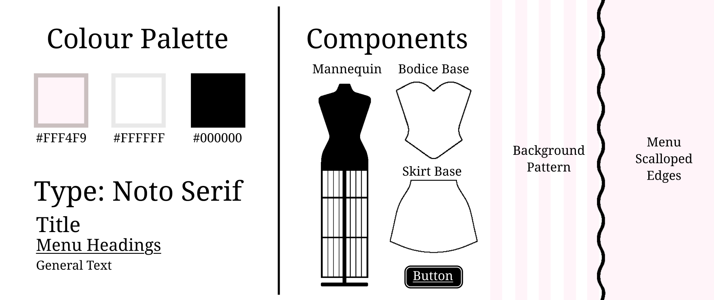

An interactive web experience experimenting with front end interactions and a vintage boutique aesthetic.
Made with: HTML • CSS • JavaScript • Adobe Illustrator
Overview
Make a Mockup! shifts away from traditional, fully rendered dress-up games to focus on the raw garment construction process. Using a responsive drag-and-drop system, users experiment by moving minimalist bodice and skirt pieces onto a central mannequin.
Visuals & Boutique Aesthetic
The interface uses visuals from old-school Parisian storefronts to create an organized, charming workspace. Solid pink panels with black scalloped edges border the screen on the left and right, cleanly isolating the skirt and bodice options to keep the user's choices focused. In the center stage, a pink-and-white striped background frames the mannequin, adding distinct visual flair without distracting from the silhouettes of the clothing shapes.

Flat Design Assets
Inspired by technical pattern-drafting textbooks, the clothing pieces are uncolored line art. To ensure every piece kept a consistent proportion and fit perfectly, a single base bodice and base skirt template were created first; all other variations were then drafted directly on top of these master shapes.